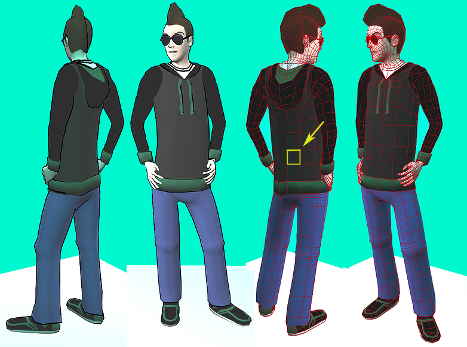
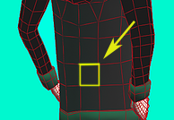

This guide will be useful for 3D artists new to the technical side of graphics looking for an in depth guide that transcends
beyond executable code and emphasizes concepts. If you're looking for a quick boom bam look-I-have-my-model-in-canvas step
by step tutorial then this guide might not be for you. I will be extensively going through and explaining every line of code
and concept as best as I can. My hope is that the knowledge will give you a sustainable base to work off of independantly on
your own. There are many getting started with WebGL guides out there, so this can be seen as both a standalone or a complement
to them. While you do not need to know how to program to implement and understand the examples, this guide assumes you
have knowledge of the 3D Modeling and Texturing pipelines for games as well as basic knowledge in programming concepts (like
knowing what a variable or a function is).
There are a few things that you need to follow along with to implement the examples in this guide:
You don't even need to download anything to see the results of your labour, you can just open up your file in browser and
it'll show you the goods. Although having some kind of text editor like notepad++
or sublime text might help make things more readable when you're writing your files.
But you don't even need that either, you can just make a txt document and change the extension to whatever you need. However,
having some knowledge of programming languages and concepts (specifically HTML and Javascript) will help in your understanding
of the examples.
On the other hand, if you are using this as a starting point for Javascript or even HTML, here are some introduction
resources to get you started:
You can easily test the code example by just basically opening up your html file in browser and, theoretically, everything
should work. If or how you want to host it is totally up to you! Let's get started!
In layman's terms, you can think of an API as an agreement between two people stating
"If you give me this instruction, I will perform this action, or return this information"
Most people are used to interacting and navigating on a website through some sort of graphical interface to get information,
for example, to check the weather. However, machines don't need any of that to check the weather, and neither do you, if you
know how to comprehend this alternative "user interface" that software use to interact with other software. This shorthand way
to do things like checking the current weather or adding an event to your calendar is what an API provides. If you are familiar
with using libraries when programming, it's sort of like that.
OpenGL is essentially an API that heavily interfaces with the graphics card drivers. You can see it as an API
that lets you interact with the graphics hardware, similar to direct3D. For example, suppose you're modeling something and you have
a UV map, a texture map, maybe a normal or ambient occlusion map and you slap them on your model, put some lights in, and hit the
render button in Maya or play button in Unity.
The scene holds the information, OpenGL interprets this information and spouts it on the screen.
So that middle part between your model and the picture is sort of the role of our API, done in browser. How it works is that
you have some vertices of something you want to draw (so some sort of shape) and then you give that to OpenGL (so you tell OpenGL
this is your data) and OpenGL will take your shaders that tells how you want to draw this data (normal, diffuse, height, etc) that
you gave OpenGL. So then from there it takes this information you specified (shaders you used, vertices you've given it, etc) and
it tells the pixels on the screen what color to be. To us it feels like we're telling it to be a certain material, light, angle, etc.
but in the end it all ends up as the same thing: a colored pixel on a screen. Essentially it converts triangles to pixels.
tada!
So why do you need to do this? You probably already know the difference between a Raster image and a Vector image. If not, below
is an visual example.
Well it's like that (except include the 3D dimension). Even though you understand vertices and OpenGL understands
vertices and Maya/Illustrator/etc understands vertices, the screen doesn't. The screen is just a bunch of pixels and when you work in
those programs and zoom in and it seems like the detail is still crystal clear it's really just the screen adjusting constantly to keep
that detail of what a vector or edge is. We call the space in which you're drawing your vertices the World Space. Sort
of like how you model something in maya or Zbrush, you know that your model only exists in this fake virtual space, and this space holds
the position of the vertices in it. The screen we call Screen Space.
At the present time, OpenGL is the cross platform standard in how game engines are written (direct3D is the microsoft standard,
or some say directX now). If you're wondering why, let's go down memory road way back in the olden days (about 20
years ago).
So before the official release of OpenGL and the use of graphics hardware, games used to just have the CPU do all the
graphics calculations, which is kind of inefficient for several reasons. First of all, this means that it's one more thing that the
computer has to think about, which puts a severe limit on what you can do as well as a lot of stress on the CPU. While the CPU is
actually pretty good at doing a lot of things at once (and pretty well) it doesn't do one specific thing the best. Sort of the whole
jack of all trades but master of none concept. Or if we want to keep to the spirit of graphics there's the whole thousand chickens
vs the draft horse saying by David Luebke.
So anyways, graphics hardware is good at being the draft horse, specifically calculating many pixels very very fast (but on the
other hand, does everything else pretty poorly) so thus became the new standard, or "correct way" to draw things on the screen.
So how does WebGL fit into all of this? If you guessed that because of the whole GL thing that they must be
related, you're right. OpenGL and WebGL are both done by this group called Kronos. WebGL is basically, as its
name suggests, the web version of OpenGL. WebGL is basically the same as OpenGL ES, which is the version of the
OpenGL library that is used for mobile. They're basically the same thing except that this web version uses
Javascript instead of c++ or Java or whatever language you use. Also WebGL is a little easier to set up, since you can see your
files in browser.
On the other hand, if you are familiar with <canvas> already, just think of it like a 3D canvas. Actually, 3D
canvas is WebGL because WebGL is rendered onto a canvas element with a context acquired from that
canvas element. This action of getting a context is sort of like getting the toolbox that lets us do draw-y things.
To follow along with this guide, you'll need set up some files to work with. So create an empty text file and rename it ironically
to awesomeEngine with a .js extension instead of a .txt extension (awesomeEngine.js). Then create a text file and rename it to
awesomeEngine again but this time with a .html extension instead of a .txt extension (awesomeEngine.html) and fill it with this:
If you've been snooping around for webGL tutorials you might have seen this already, so sit tight! If you're a beginner, you might
be thinking, what did I just do? Well, if you go to the folder where this file is and double-click on it, or right click and open it,
it should pop up in your web browser as an empty page (folllowAlong.html could be any html file). However if you right click on it
and "inspect" it you should see what you've written in the element tab:
So an HTML file is basically the web page version of a text file and comes with it's own rules for implementation.
You might notice that your html file doesn't look like the web page you just opened, although you can see the contents distributed
throughout the html file with the words enclosed with "<" and ">" characters not appearing in the browser page. Those are called
HTML Tags . HTML tags are the hidden keywords within a web page that define how the browser must format and display
the content. We won't go into too much detail, but you can easily look up or even deduce what all the tags do and mean. For example
the words enclosed by the <title> and </title> tags appear as the description in the web tab. If
you haven't guessed already, the line that the <script> tags appear are where we link our javascript file to the
HTML file so we can actually use all the cool stuff we do later on
One special tag that foreshadows what we'll be doing next is the <body> and <canvas> tag.
That is what is so great about webGL. All you need to get started is a body and canvas(where you draw). The text you see in
between the canvas tags will only show on the page if your browser doesn't support the canvas element.
<canvas> Browser does not support the canvas element.
<canvas>
Usually it's supported unless you're on internet explorer 8/9 or below (basically if your browser is super old or on a weird
device like I mentioned before. If it is then I can only say get with the program dude and upgrade your browser!).
So in your awesomeEngine.js file we're going to start by declaring a global variable called gl.
var gl = {};
Many guides (and people for that matter) just do var gl; which is perfectly fine. The empty
curly braces sets it to an object so you don't get undefined errors when you try to use it when it doesn't exist yet, so it'll
help prevent null errors (well not exactly prevent, they'll just be silent).
So now we need some kind of initialization function which will basically start webGL for us. So after declaring your global
variable we're going to add a function underneath with another variable.
function initGL(){ var canvas = document.getElementById("someID");
}
So what var canvas = document.GetElementById("someID") is doing is getting a reference to the canvas
DOM element. It's basically saying "I want whatever canvas element in awesomeEngine.html that has an id called "someID" to be a webGL
canvas". We haven't actually gotten the WebGL context yet, but we're grabbing this canvas because that is eventually what we want to do.
Oh, but wait, we haven't actually assigned our canvas in our HTML document to an id, more specifically "someID" , so let's add this id
to our canvas element:
<canvas id="someID">
Browser does not support the canvas element.
<canvas>
So if you got stoked and refreshed your page you'll see that nothing happened. Well, that's good nothing is supposed to
happen. All this line is doing for us is it's basically giving us a variable we can manipulate. Basically this variable
is the OpenGL state. This is like an OpenGL state machine that we can now manipulate. But to manipulate it, we need the
toolbox. Well, that is what this block of code is for! Put this after the previous line:
So the inspector actually will show WebGL failures unlike OpenGL, which just fails silently. Well, actually, WebGL still fails
silently, but the difference between OpenGL and WebGL is that WebGL has a browser that will tell you that it's failing silently.
So if it does this for us why do we need this try catch block? Well, in a real world setting when WebGL fails you would probably
want to handle it as opposed to letting it get to the user. So even if you still don't really handle it (here we're just kind of
eating it and doing nothing) you still just want to make sure if you're thrown an exception it gets handles in some way
(even if it's doing nothing).
We can also add in an alert that will pop up if there's an absense of a GL context:
if(!gl){ alert("unable to initialize webGL. Your browser may not support it");
}
This alert well run if we can't get gl or it fails, which means there's a problem. You've already probably ran that web page to
check, so you shouldn't get this, but still, could be good to have just in case someone else is opening your file.
So what we are trying to do is try to grab the standard context with our gl variable we declared earlier.
That is the canvas.getContext("webgl") portion. If that fails we need to fallback to experimental-webgl
which the older version that came before standard webgl. You can think of canvas.getContext("webgl")
as the action of giving us a toolbox. This one line is sort of like a one time getting access. Kind of like
opening up a new document in Photoshop (but of course, not quite!). So what ends up in gl? An object. From now
on when we use access gl or use gl, imagine gl as an object, similar to the toolbox that we would
have access to and use once we have opened up our document in Photoshop.
And finally, no matter what, let's return out gl object:
if(!gl){ alert("unable to initialize webGL. Your browser may not support it");
} return gl;
If you're still refreshing your page and wondering what's up then you've guessed right again, nothing is supposed to happen!
Remember, all we got is a "toolbox" that allows us to draw. I'll add some logs to the console for the next step. So now we need
to use this function, so lets call it in our awesomeEngine.html:
onload is basically an events tag that has an anonymous function on it. Here we need parenthesis because
the function we're calling is actually Javascript. So now lets add a log to the console in our function so we can see it
actually working:
function initGL(){ console.log("omg we're in the function!"); var canvas = document.getElementById("someID");
So now if you refresh your browser (with the inspector still open) and switch over to the console tag you should see the
first fruits of your labour!
Okay, so nothing appears to happen still. But we know something happened. Since our alert wasn't set off, we know that
gl was successfully made. But nothing happens because while we've set our function to do something in the event that gl
doesn't work with the if(!gl) statement, we haven't actually told our function to do anything
if gl does work. Right now it exists but that's all it is doing and being; a toolbox just sitting there, waiting
for us to use it to draw something.
So let's draw something. Let's add in another if statement of the opposite kind. If gl does in fact work, we will execute
all the things in this if statement below:
if(!gl){ alert("unable to initialize webGL. Your browser may not support it");
} if(gl){ gl.clearColor(0.0, 0.0, 0.0, 1.0); gl.enable(gl.DEPTH_TEST); gl.depthFunc(gl.LEQUAL); gl.clear(gl.COLOR_BUFFER_BIT | gl.DEPTH_BUFFER_BIT); gl.viewport(0,0, canvas.width, canvas.height);
}>
return gl;
If you refresh the page you should finally see your canvas and get something that looks like this:
So what did that if statement do? Let's break it down line by line.
So this is a two step process. clearColor is basically answering the question of "what color does
a blank screen look like for me?" in RGBA values and clear is where you are actually filling it with
whatever clearColor defines is your blank canvas color and it works sort of like a memset in c, clearing everything first
so that anything old in there is no longer there. The two statements are like two bit flags that are "cleared" or flushed with the color.
The single pipe is a bitwise or (kind of like a binary addition except there's no carrying).
Anyways, here I just set my "color" to a clear color (nothing) but because I have the alpha channel cranked all the way to 1 so that's
why we have a black background. Don't like black? Well you can just pick your clearColor(R, G, B, A) values if you so desire
and there are some websites out there that will make it easier.
Sometimes I'll just go to a site like this
that has some predefined colors and their RGBA values.
gl.clearColor(0.960784, 0.960784, 0.862745, 1.0);
Or if you really want to pick out your own color look for a site like
this that lets you do just that, even playing around with the alpha value! (I didn't in my example below, but you can!)
gl.clearColor(0.2, 0.63, 0.62, 1.0);
If you are looking around for websites, make sure the RGBA values they give are on a scale of 0-1.
So actually, you don't really need those two lines for this guide but you probably will be wanting them in the future.
enable(gl.DEPTH_TEST) enables a depth test and depthFunc(gl.LEQUAL) is when the actual comparing
is being done. Together they make it so that if you have things behind each other it'll draw it in the right order, sort of
like how layers work in Photoshop.
LEQUAL is synonymous with <= which is the default comparison, although you could switch it to the other
comparison, and since the layers are all in the same order anyways it won't matter too much just how you interpret what is
behind or in front. There are some who say the default is better because otherwise you might get unexpected results with your
shaders later, but that's life!
So finally we have the viewport.
gl.viewport(0, 0, canvas.width, canvas.height);
If you somehow played around with deleting lines and seeing what they do, you might notice
that even if you delete this line you'll still get the same black canvas. Well, when a webGL context is made its viewport will
automatically match the size of the canvas, that's why. And the viewport will match the height and width of our canvas.
We didn't specify a height or width for our canvas, but it has a default size, which if you scrolled over in the inspector
you would have been able to see it highlighted.
looks awfully familiar, right?
Actually as a side note, you can specify your own dimensions if you want to, by just doing this:
<canvas id="someID" width="640" height="480"> Browser does not support the canvas element.
</canvas>
And you'll see, even without the viewport line called, we'll get our canvas
Well, actually, the importance of the viewport and it's role is nicely outlined
here. So by declaring this viewport
line you are doing what a vector based program such as Maya or Illustrator is doing when you zoom in or out. They keep the
detail! So basically the job of the viewport is to tell openGL how big your drawing field is. Although this happens automatically
when the context is made, it only happens once. So if you somehow have a full screen canvas, or need to adjust your canvas
resolution due to either it being on another window or the user shrinking/expanding the window, you're going to need to update
your resolution somehow.
Now we have our filled drawing area, we still need to do a few chores before we get drawing. Just in case, these are how
the html and js files look like so far.
So...shaders. Remember that this is a 3D canvas, so what happens when you don't have a shader in Maya? Well if you kind of click
around the scene you might accidentally click on it and the wereframe will highlight and you'll get a wireframe version of your model,
but if you try to render it you don't see anything! So we need those shaders!
So we need two types of shaders here; fragment and vertex shaders. Also, the reason we don't put
those in our js file is because they're no actually written in Javscript. Well, if you really wanted to you could do it as a string
in your function, like this:
Or you could just do it in one long string but that's even less readable...so we're going to just do it in html. So anyways, these
shaders are in what's called GLSL which is an OpenGL shading language similar to c. Sort of like how if you wanted to
write shaders in Unity you would use a language called Shaderlab, which is a different thing on its own. So let's talk
about the two shaders above.
Vertex Shader and Fragment Shader
So remember earlier in the tutorial I mentioned how OpenGL understands what vertices are and will kind of use that information to
determine what color each pixel should be on the screen? Well we are finally there! These two shader scripts are making it happen!
In a nutshell, the vertex shader happens per vertex while the fragment shader happens pretty much per pixel
. Well the fragments are not actually 1 pixel, sometimes its multiple pixels per fragment or smaller, but you can think of it
as a pixel shader all the same.
So these two scripts are connected in that you're passing vertices to the fragment and it'll make pixels out of it. What actually
happens is that when you're passing a variable from vertex to fragment it linearly interpolates it, which means if you have two vertices
it will figure out the values in between them. So if you have two vertices with two colors then it'll be a linear gradient, as opposed to
like a spherical one or any other gradients you might have played with in Photoshop or Illustrator.
From the vert colors we get linear "guesses"
So OpenGL makes use of two entities: the Vertex Array Object (VAO) and the Vertex Buffer Object (VBO).
These both act kind of like pointers that hold different sorts of data. In simple terms the VAO holds the state while the VBO holds the data
for the verts. So we need to remember here that the entry point is the vertex shader. Let's dive into the details.
The attribute variables are basically the input positions of the vertices and serve as inputs to the vertex
shader, or in different words, the thing we will be specifying throuhg OpenGL as a vertex array. Essentially this is the
position of the verts. Right now we're only doing position, but you can also add in another attribute variable for other things, like
normals or uvs (just add in another variable with type attribute, vec2 or 3 depending on what you want).
You will notice that both scripts use the varying type which basically tells us that it's going from vertex
to fragment. The varying keyword makes the vertex talk to fragment. So this means something different for each shader. The varying
is an output from the vertex shader, while it's an input to the fragment shader.
The precision mediump float specifies the floating point precision, which is required. So here we're doing
a precision of mediump. You see that this is reflected from here on.
Finally, we need to use those things and so each function has a main. So lets start with the vertex main. We feed homogonous coordinates
into our fragment shader with oPosition = vec4(position, 1.0), making it from vec3 to vec4, and the final output of the vertex
shader is the gl_Position, which tells the vertex where it is. In our fragment shader main,
gl_FragColor is the final final output of our frag shader, basically telling the screen what color to be. Remember, the whole
goal of everything is to tell this thing "I want this pixel to be this color". So based on position (oPosition), we get a value
in between -1 and 1, but we need to add 1 to it because our actual colors as we discussed earlier (RGBA) are from 0 to 1. Anyways, We're
going for sort of a rainbow theme here with our shader, as you saw in the picture of the triangle from before.
We're not done yet! Time to use these scripts. We need two functions:
1. getShader(name) This first function will do something similar that we did with our canvas element, which is getting
those shader scripts so we can use them.
2. initShaders() We will then use getShader(name) in this next function, which will initialize the shaders.
So lets start with the first function. Add this function after the initGL() function.
function getShader(name){ var shaderScript, shaderSource, currentChild;
So similar to our canvas element, we need to get the Shader elements from the DOM, and because we have two, we want to be able to
use the same code for both ids. So it takes in a parameter of name which would be the id we assigned the the shader scripts
in our HTML. So this function essentially walks through the elements in our HTML page and gets the text nodes. So lets step through the
chunks of the function.
So here we are grabbing whatever name is inputted, name as in the id, and input it into the shaderScript variable.
In this case we gave our shaders the ids "shader-vs" and "shader-fs". If for some reason we fail to get the id, we will return null.
So if we succeed in grabbing the id, we will go through the DOM tree and convert our shader script into the format that you saw
in the previous section. You see how we declare at first an empty string shaderSource and then as we go down the DOM tree
we concatenate everything in the script to the string. So essentially the string is made up of everything within the script tag of the
shader who's id we specified. So then we return that string as opposed to null (if it didn't work).
Okay, so the next function uses this handy dandy function, and that is the initShaders() function, and if you hadn't already
guessed, this function intializes our shaders. Put this function in your js file, you can put it before or after, wherever makes sense.
function initShaders(){ var fragmentShader = gl.createShader(gl.FRAGMENT_SHADER); var vertexShader = gl.createShader(gl.VERTEX_SHADER);
if(!gl.getShaderParameter(fragmentShader, gl.COMPILE_STATUS)){ alert("Shader compilation for fragment shader failed.\n" + gl.getShaderInfoLog(fragmentShader)); }
gl.compileShader(vertexShader);
if(!gl.getShaderParameter(vertexShader, gl.COMPILE_STATUS)){ alert("Shader compilation for fragment shader failed.\n" + gl.getShaderInfoLog(vertexShader)); }
gl.linkProgram(shaderProgram); if(!gl.getProgramParameter(shaderProgram, gl.LINK_STATUS)){ alert("Linking program failed\n" + gl.getProgramInfoLog(shaderProgram)); }
return shaderProgram;
}
So all of these functions that we are using within this function are part of gl, gl provides these function, which is really nice.
So the big verbs here will be creating, attaching, compiling, and finally linking. If you need to visualize it, think about how you link
shaders in Maya. Everything else is already taken care of but here we have to do them manually. Lets go through step by step.
var fragmentShader = gl.createShader(gl.FRAGMENT_SHADER); var vertexShader = gl.createShader(gl.VERTEX_SHADER);
var shaderProgram = gl.createProgram();
So here we are specifying what kind of shader we want to create with each variable. The variable names pretty much tell us what we're
creating. The shaderProgram variable will be a combination of those two shaders, which we'll see in the next chunk of code.
So here we are specifying source code to the shader with the first two lines and then in the second we are attaching both to the
shader program.
gl.compileShader(fragmentShader);
if(!gl.getShaderParameter(fragmentShader, gl.COMPILE_STATUS)){ alert("Shader compilation for fragment shader failed.\n" + gl.getShaderInfoLog(fragmentShader)); }
gl.compileShader(vertexShader);
if(!gl.getShaderParameter(vertexShader, gl.COMPILE_STATUS)){ alert("Shader compilation for fragment shader failed.\n" + gl.getShaderInfoLog(vertexShader)); }
So here we are compiling the shaders and then checking for errors. If it didn't compile successfully we'll send out an alert
that also spits out the info log telling us what happened.
gl.linkProgram(shaderProgram); if(!gl.getProgramParameter(shaderProgram, gl.LINK_STATUS)){ alert("Linking program failed\n" + gl.getProgramInfoLog(shaderProgram)); }
return shaderProgram;
And finally, the final step is linking everything together, which also has an error check. After everything is through we return the
shaderProgram object.
Now let's use them in my initGL() function:
gl.viewport(0, 0, canvas.width, canvas.height);
}
var program = initShaders();
gl.useProgram(program);
var positionAttributeLocation = gl.getAttribLocation(program, "position");
gl.enableVertexAttribArray(positionAttributeLocation);
return gl;
So the first two lines we are actually initializing our shaders by running the function and getting a program object and then
in the second line setting it so we can use it for rendering. In the next line we are getting our variable position attribute
location finally making it a vertex shader variable in the last line.
So you probably refreshed the page again and are like "I still can't see anything!" Well remember remember how we talked about
the Vertex Array Object and Vertex Buffer Object? The array part has been taken care of (see
previous section) so all that's left is this buffer part bb! Here is the function where we'll construct an object to "appear" on
the canvas. I'm sure your mind is already racing, thinking of all the possibilities and things we could make! Well for this guide
we're going to start with...

No, not the person, this thing

Maybe it seems lame, but hey, this is a getting started guide and you gotta start somewhere! A quad is appropriate since
even the most complicated models are made out of quads (and broken down into tris at runtime). So go ahead and pop this baby
after the other functions we just wrote.
function initBuffers(){ var quadBuffer = gl.createBuffer();